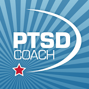
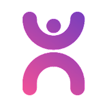

My favorite self-help apps
One of the things I find most insidious about mental health apps is that most, if not all of them, have the dreaded in-app purchases tag underneath them. "We will help you manage your anxiety and depression," they promise, all for a monthly fee of $5.99! It's a nightmare, right? What if you find out the app just sucks and is only breathing exercises or something?
However, never fear! I was excruciatingly mentally ill in the past few years of my life and have come across some wonderful and completely free apps to help you manage your mental health! These will cover... a number of different conditions. Keep in mind these are all self-help apps. These are literal lifesavers for me and I hope you are able to find some use out of these as well.
Booster Buddy
[Android/iOS]This is seriously like my all-time favorite. This app gives you a little animal friend who you have to wake up every day by performing three simple tasks. You start off by answering some questions about your symptoms which will inform the types of tasks you have to complete. Every day you do a mood check-in which also informs the types of tasks you will be doing that particular day. It will also ask questions about your medications and if you need reminders to take them. Some other neat features of the app include a journal, calendar, and crisis plan.
It's a very cutesy and pleasant app that helped me out a lot over the years. A neat thing to mention about the tasks is that they are very small and doable for someone with mental health issues, and you can even choose to get a different one if you don't feel like you cand handle it. It really rewards you for doing your best and it really feels like the developers actually cared about providing support. I highly recommend anyone looking for support checks this app out.
Sadly, the app is officially "retired," meaning it's no longer going to receive any updates, but as of writing this the app is still fully functional. Definitely still worth downloading as it is still available on the app stores!
MoodTools/FearTools
[Android/iOS]
These are both different apps by my FAVORITE developer, Inquiry Health LLC. The first is for depression and the second is for anxiety. Both apps include information on the condition, a test (to measure symptom severity), a CBT thought diary. MoodTools specifically has a list of activities to see what might help alleviate depressive symptoms and a basic safety plan for moments of crisis. FearTools has a section for exposure therapy and a visual breathing exercise with custom timing.
I find the safety plan in MoodTools to be the most useful out of all the apps listed here, especially if you suffer from suicidal thoughts. It is the most comprehensive and provides a few more strategies beyond "call a friend/the suicide hotline". I also really liked the breathing tool in FearTools. Often these apps will give you a guided audio exercise to listen to or something, and the pacing might just make you more panicky sometimes. I would just whip this app out in class when I was having an attack and breathe along with the visual on screen, which is much more convenient.
I should also mention that Inquiry Health LLC has other apps, mainly those symptom severity tests, encompassing many more mental health conditions like OCD, Bipolar, PTSD, etc. I really liked using these tests to keep track of my mental state over time and can be pretty convenient if you're in therapy as well. I haven't personally used any of their other apps other than what I've already mentioned, but they might be worth a look-see!
PTSD Coach
Android/iOS
PTSD Coach is a bit of a lightweight app, but it was useful to me when I was first seeking treatment. It has a good amount of information on the illness itself and covers a wide array of symptoms and thoughts people could have about it (i.e. Embarrassment over trauma, anger issues... etc.). It also provides coping tools that you can either select and favorite individually or be guided through based on whatever emotion you're feeling. There is also another section of crisis resources on this app and you can personalize things a fair amount.
Something particularly helpful about the information this app provides is the section on Getting Professional Help. At the time I kinda skipped over it because I was looking for quick relief in the coping tools, but it goes into more detail than other medical websites I used to read through. It lists the different types of therapy you might get as treatment as well as the types of medication you might get described from a psychiatrist. There's also some more about how to find a provider, how much it costs... so on and so forth.
It's all pretty accurate to the treatment I went through after years of fumbling trying to find a doctor, so if you need help finding a roadmap on how to get treatment, this is a really good resource!
Calm Harm
Android/iOS
This app has some of the most useful coping methods for self-harm that I've ever seen. When you open the app, you are given five options for what type of activity you need to deal with urges: Comfort, Distract, Express Yourself, Release, Breathe. You can also just pick a type at random. The first four will ask if you want a 5 Minute Activity Rule (5 blocks of 60 seconds) or a 15 Minute Activity Rule (single block) and then give you a list of activites which you can select or, again, just have it pick one at random for you. I'm assuming what makes these activities so effective is the fact that many are actually user-submitted, and you can submit your own through the app.
I particularly suffer from Harm OCD, which I know isn't the same thing as self-harm as a unhealthy coping mechanism, therefore I can't really speak to how it works in its intended purpose. However, I was still able to get alot of mileage out of this app when my urges were particularly bad. I also sometimes would use it for times I just generally needed a distraction or to calm down from a session of exposure therapy or general OCD stuff. Obviously, it has multiple uses. Anyways, your mileage may vary, but I'd say this is helpful for anyone whose mental health condition involves needing to resist urges.
Move Mood
Android/iOS
If you liked Calm Harm, you'll probably like this app too because it's made by the same developer. Move Mood is supposed to specifically tackle low motivation and mood that comes with depression by giving you a few tasks to complete in intervals of your choice. It starts off by guiding you through picking a couple tasks you want to track- a routine task, a necessary task, and an enjoyable task and the times of the week/month you would like to complete them. Then all you have to do is just check in when you complete a task and write down any mood changes you might experience as a result.
Something particularly neat is that it lets you put down a maximum of 5 steps for each task, if you need them broken down. I find this is helpful for folks with ADHD (like me!) who have trouble remembering all the steps it takes to do certain things, and having them broken down makes them feel much more manageable. I use it for basic things like brushing my teeth and studying. Worth checking out if you need help with daily/weekly tasks!
More to come when I investigate a few more apps...